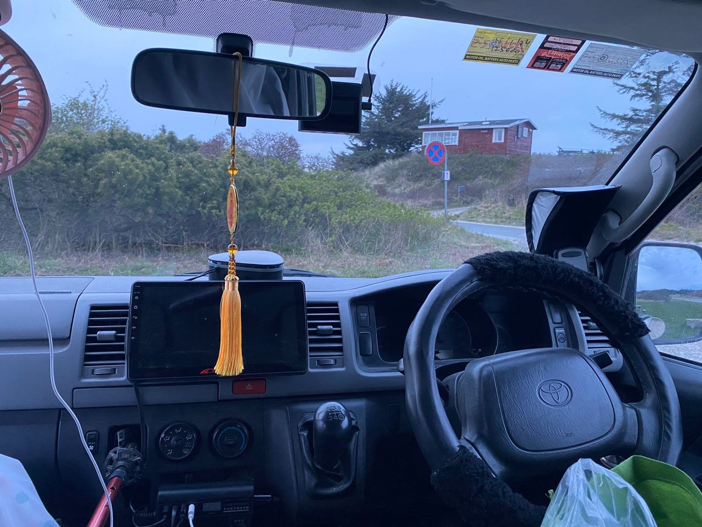
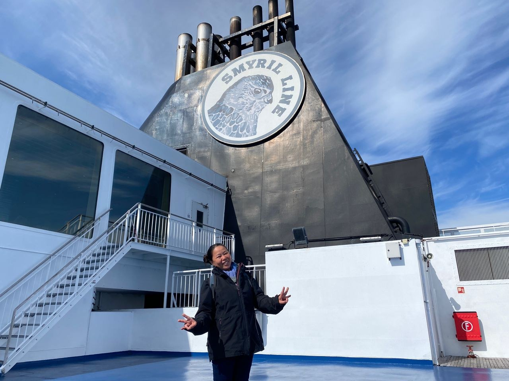
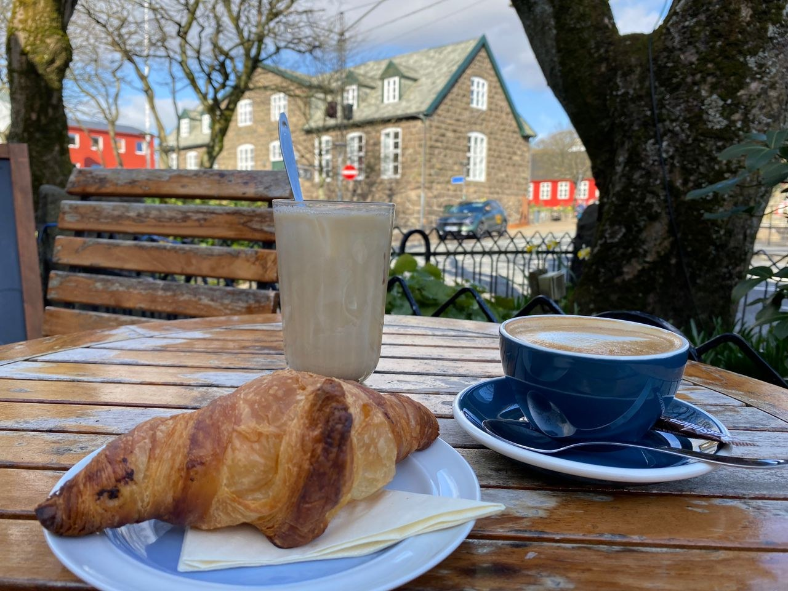
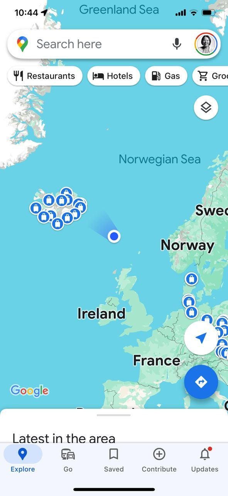
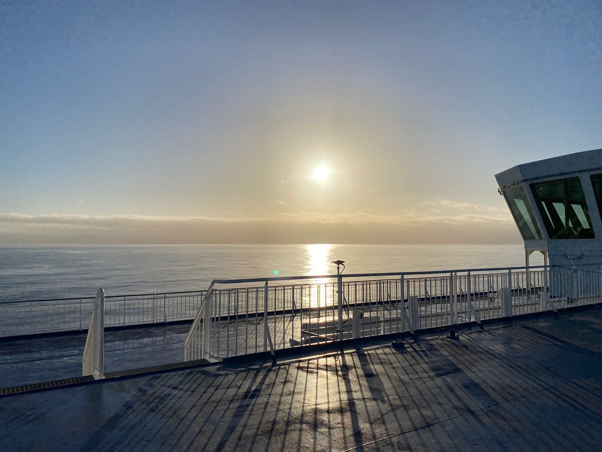
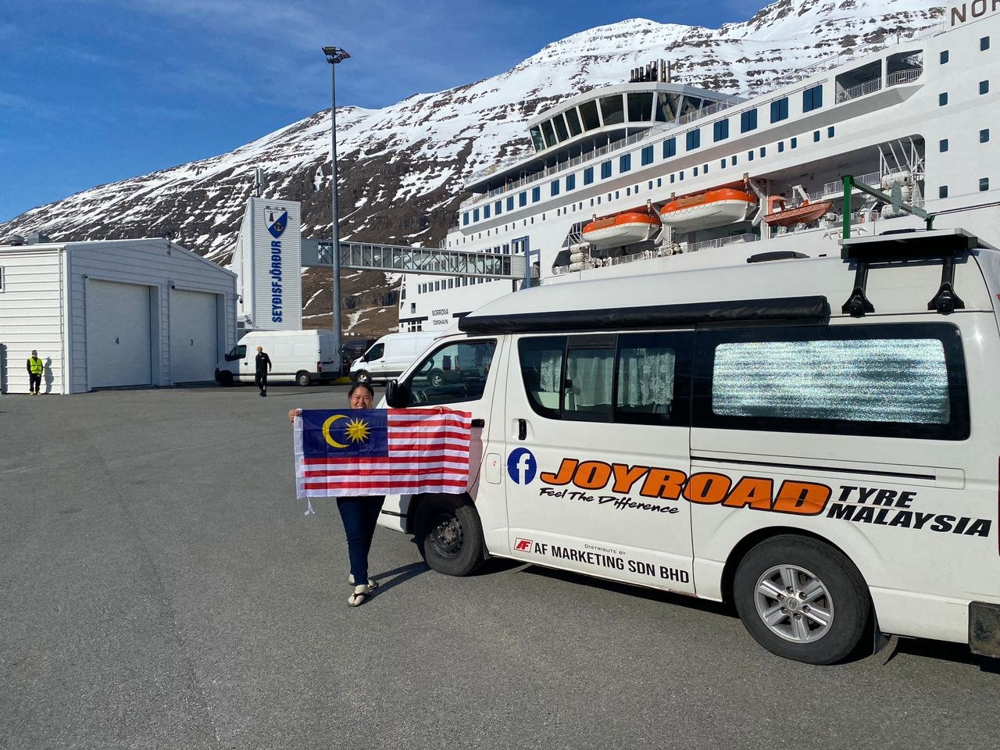

Three Legs
The journey had three great legs.
By this point, the journey could be seen in three great legs.
First leg: Malaysia to Iran — done. This was the land passage through India, Nepal, Pakistan, and into Iran.
Second leg: Iran to Iceland — done. From Iran, Toyotaki crossed Armenia, Georgia, Turkey, Europe, Denmark, and then the northern sea toward Iceland.
Third leg: Iceland onward, eventually back toward Malaysia through Russia, China, Laos, and Thailand. That return arc still waited ahead.
Real Story · 中文
18/4 at Hirtshals — 8:39am, sky still very bright.
18 April 2024，我停在 Hirtshals。 早上 8:39am，天空还是很亮。 在这种北方的光里面，Toyotaki 静静停着， 好像已经在等下一段不一样的路。
这不是普通的 overnight stop。 这里是 road journey 暂停、sea journey 开始前的等待。

Hirtshals Port
Queueing at the port. So excited.
20 April 2024，我在 Hirtshals port queueing。 那种心情很兴奋。 因为接下来不是我一个人上船， 是 Toyotaki 也要一起上船。
Campervan travel 最特别的地方就是这样： 车不是被留在岸上， 它是这个旅程的身体， 它跟我一起进入下一片海。
Driving In
Yahoooo — driving into the car ferry!
然后，终于轮到 Toyotaki drive into the car ferry。 Yahoooo!
那一刻真的很有 milestone feeling。 从 Malaysia 一路走到 Denmark， 然后不是继续走 road， 而是把整辆 Toyotaki 开进一艘大船里面， 让船把我们带去 Iceland。
Onboard
I onboard!!
20 April to 22 April 2024， 我 overnight onboard Smyril Line Norröna。 这是第二段旅程里面非常重要的一段。
船上不只是交通。 它是一段 floating world： 车在船里，人也在船里， road life 暂时变成 sea life。

Faroe Islands
21/4 got chance to visit Tórshavn, Faroe Islands.
21 April，我有机会 visit Tórshavn, Faroe Islands。 Yes, the one that grow grass on their rooftop.
那天的咖啡、croissant、街景和屋顶， 都有一种很北方、很安静、很特别的感觉。 旅程不是直接从 Denmark 跳去 Iceland， 中间还有 Faroe Islands 这一小段像梦一样的停顿。

Middle of the Sea
Weird picture: my campervan and I in the middle of the sea.
有一张很 weird 的 picture： Google Map 上面，我的位置在海中央。 我的 campervan and I were in the middle of the sea.
这张图很特别。 因为平时 campervan 是属于 road 的， 但那一刻，Toyotaki 的旅程被画在 North Atlantic 上。

North Atlantic Sunrise
北大西洋的朝阳。
船上看到北大西洋的朝阳。 海面很大，光也很大。 这一段不是某一个国家的景点， 而是一段在海上的心境。

AiLUHC Reference Memory
This crossing later became design memory.
The experience on Smyril Line also became part of my real-world reference memory for AiLUHC — Aluminium Ice-Class Landing Utility Hybrid Catamaran.
A future vessel cannot be designed only from drawings. This ferry crossing gave real body memory: how a vehicle boards a sea vessel, how the deck feels, how passengers move, rest, eat, look at the sea, and how road life changes when the road becomes ocean.
Milestone Gratitude
🌟 感恩满满 🌟
回首这段不可思议的旅程，从印度繁华的街头到冰岛宁静的山水， 每一步都得到了我亲爱的家人、朋友和赞助商 JoyRoad Tyre Malaysia 的支持。 穿越 18 个国家，历时 182 天，行驶了 19,958 公里， 你们的坚定信念激励着我前行。 感谢你们成为我前进的指引之光。
满怀着无尽的爱和感激，
陳姝伶 Chin Sook Ling（Tuzi Vlogs）
Gratitude Overflowing. Reflecting on my incredible journey, from bustling streets in India to serene landscapes in Iceland, every step was supported by my beloved family, friends, and sponsor JoyRoad Tyre Malaysia. Through 18 countries, covering 19,958 km in 182 days, your unwavering belief fueled my spirit. Thank you for being my guiding light.
With boundless love and gratitude,
Chin Sook Ling 陳姝伶（Tuzi Vlogs）

English Memory Summary
The second leg reached Iceland by sea.
On 18 April 2024, Tuzi waited in Hirtshals, where the sky was still bright at 8:39am. On 20 April, she queued at Hirtshals port and drove Toyotaki into the Smyril Line Norröna ferry. From 20 to 22 April, she overnighted onboard Norröna.
On 21 April, she had a chance to visit Tórshavn in the Faroe Islands. The crossing gave her the strange and beautiful feeling of seeing herself and her campervan in the middle of the sea on Google Maps, followed by a sunrise over the North Atlantic.
This ferry crossing marked the completion of the second major leg: from Iran, through Europe, to Iceland. It also became a design reference for AiLUHC, because real sea-crossing experience teaches what drawings alone cannot.
Heart Statement
有些路不是用轮胎继续走，而是让一艘船把整段旅程托起来。
Norröna carried not only Toyotaki, but the whole second leg of the journey: from Iran to Iceland, from land to sea, from road memory to North Atlantic light.